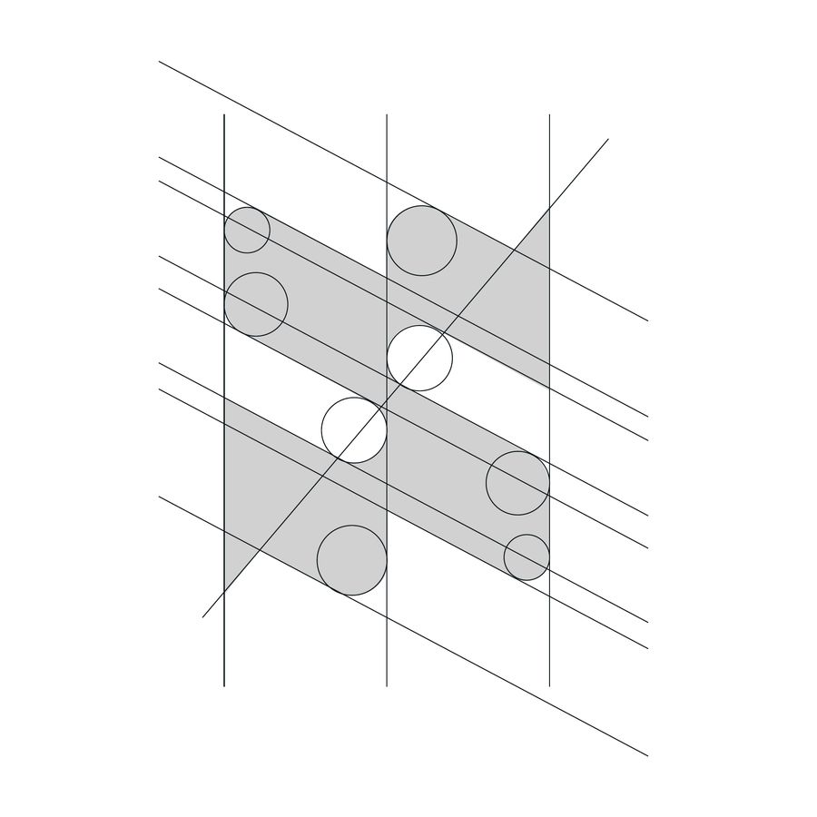
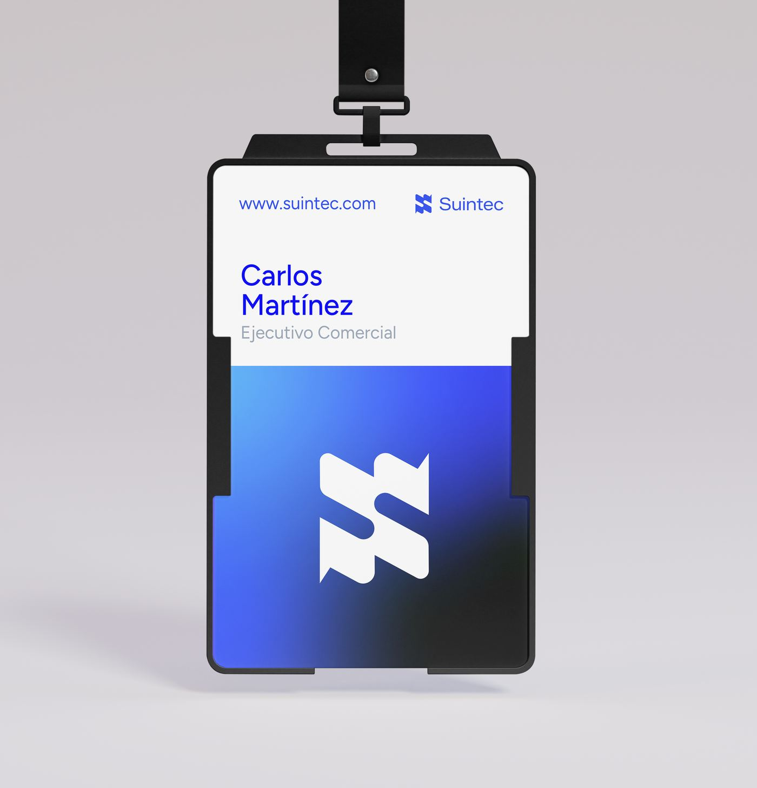
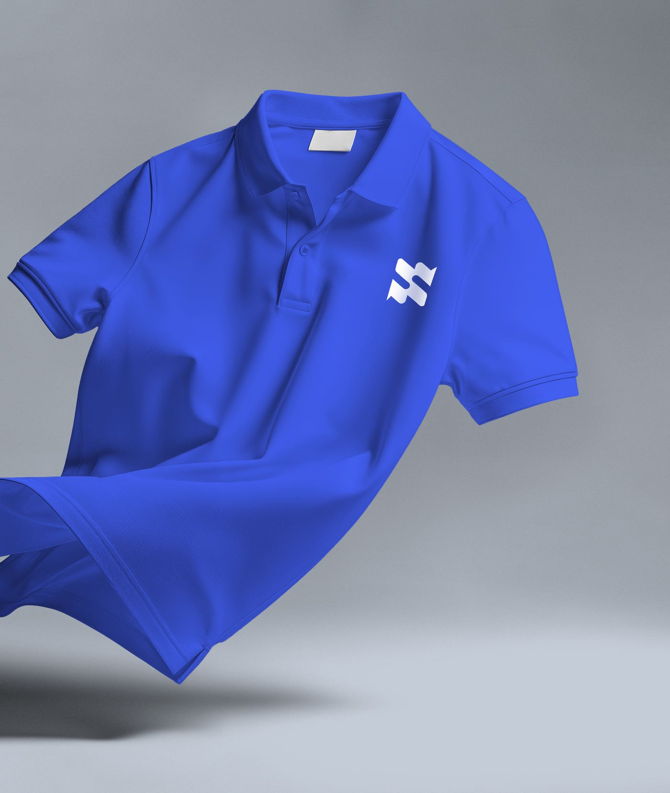

Identidad visual
Una marca sobria y precisa para el tratamiento de agua industrial
Suintec es una empresa B2B especializada en sistemas críticos de tratamiento de agua para industrias reguladas, donde la confiabilidad y el cumplimiento son esenciales.
El reto
Sus clientes son equipos técnicos que eligen proveedor por la confianza que les genera. La marca tenía que transmitir esa seriedad desde el primer contacto y verse igual de sólida en una propuesta comercial, en un uniforme o en una instalación, sin caer en la imagen genérica del sector industrial.
La solución
Definí una personalidad profesional, sobria y precisa y la traduje en un sistema sin recursos decorativos: un símbolo geométrico a partir de la “S”, una paleta de azules con un degradado propio, la tipografía Zalando Sans y un manual de marca que asegura un uso correcto y consistente en todos los contextos técnicos, corporativos y comerciales.
- Profesional
- Sobria
- Precisa
El símbolo
El símbolo de Suintec se construye a partir de una abstracción de la letra “S”, inicial del nombre. La forma se desarrolla sobre una estructura geométrica equilibrada, pensada para transmitir estabilidad, continuidad y control.
La construcción prioriza la claridad y la funcionalidad, evita recursos decorativos y asegura que el logotipo funcione bien en cualquier tamaño, desde un bordado en el uniforme hasta un pendón en la calle.

Logotipo
La versión principal se usa sobre fondos claros y la negativa sobre fondos oscuros o de alto contraste. El manual define además un área de seguridad, tamaños mínimos y los usos incorrectos, para que la marca se lea siempre con claridad.
Paleta de color
Dos azules definen la marca y se unen en un degradado que va del azul claro al negro azulado. Un gris técnico y un blanco verdoso, que recuerda al agua limpia, equilibran el conjunto.
- Azul Suintec#2F4FF3
- Azul claro#5AACFE
- Negro azulado#071015
- Gris técnico#DCDEDD
- Blanco agua#E6FFF2
Tipografía
Zalando Sans es la tipografía corporativa. Es una sans serif de trazos limpios que mantiene la marca legible y actual, y sus cuatro pesos cubren desde textos técnicos hasta titulares.
Zalando Sans
ABCDEFGHIJKLMNÑOPQRST
abcdefghijklmnñopqrst
1234567890
- Light Aa
- Regular Aa
- Medium Aa
- Bold Aa
Aplicaciones
La identidad se aplicó en las piezas que más contacto tienen con clientes y equipos en campo: carnets de identificación, uniformes y señalización exterior.


Resultado
Suintec cuenta con un sistema de marca coherente y un manual que define logotipo, construcción, área de seguridad, tamaños mínimos, usos incorrectos, color, tipografía y aplicaciones. Con él, cualquier persona del equipo o proveedor puede aplicar la marca de forma correcta y profesional.
Lo que aprendí
En un sector donde la confianza lo es todo, menos es más. Partir de la personalidad de la marca, y no solo de la estética, hizo que cada decisión visual tuviera una razón y fuera fácil de defender.
Foto de portada: Lance Anderson en Unsplash.